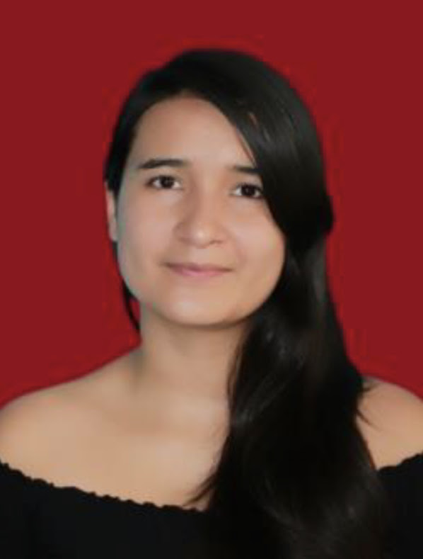
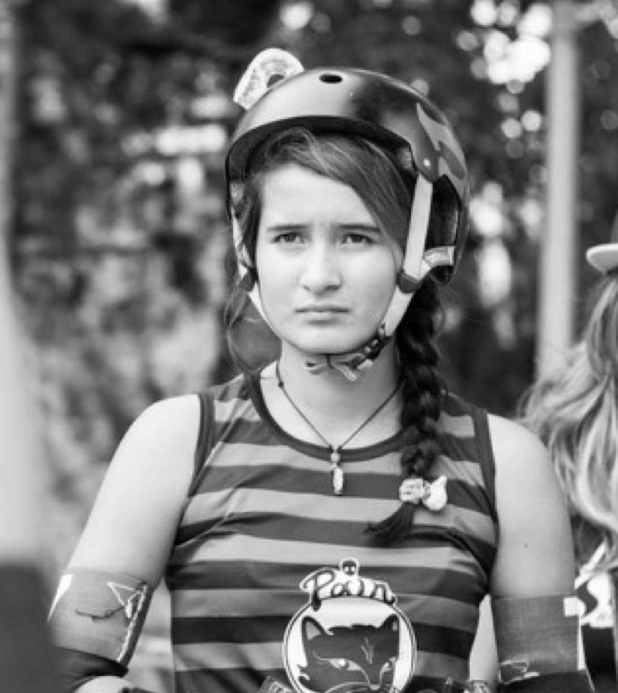

MI BIOGRAFIA

Mi nombre es Laura Caicedo, tengo 29 anos y resido entre la ciudad de Envigado y Bogota. Soy medica veterinaria desde el 2018 con un gran amor a los animales en general. Me considero una persona creativa y dinamica, me gusta estar en movimiento
Mis pasatiempos

Uno de mis hobbies favoritos es el deporte, en especial el patinaje; Desde corta eda he practicado Hockey, luego, cambie al roller derby y al final por tiempo practico roller skate
Mis futuros proyectos

Al dar un primer paso a un cambio total de profesion, es un poco incierto que pasara en un futuro, sin embargo, como principal objetivo o meta a futuro cercano planeo tener experiencia en el desarrollo web y poder depender economicamente al 100% de la programacion